The best phones in every price range
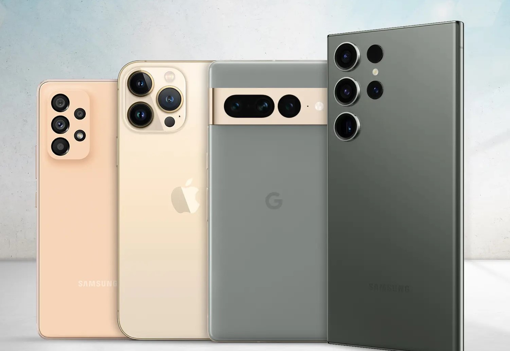
Nowadays, people in the world are looking for the best option to buy a phone and they try to make a great purchase according to their budget. In this site, I try to find the best phones in three different categories, namely flagship, mid-range and economical. I will check and put the best ones for you. Next to each phone, I have put the link to buy them and their rating. The point that you should pay attention to is that you should choose the phone you want depending on the type of use. For example Someone who cares about the phone's camera should find a model in their range that has the best camera. Let's go and see the phone models together.
iPhone 15 Pro Max
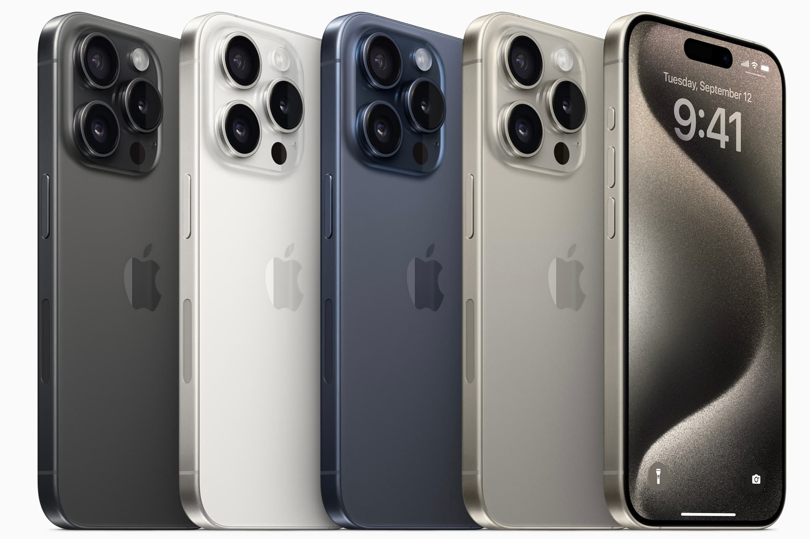
iPhone 15 Pro and iPhone 15 Pro Max with USB-C port, titanium frame, wider zoom range (specific to the Pro Max model) and playing console games, attracted the attention of Apple users and enthusiasts; But a little later, they were in the news with the news about overheating of the body.As before, the A17 Pro chip uses a combination of 2 high-power 3.78 GHz cores and 4 low-power 2.11 GHz cores as CPU; Therefore, compared to the previous generation, the frequency of the cores experiences an increase of 9 and 4 percent, respectively.Apple says high-powered cores experience a 10 percent improvement thanks to better computation type prediction and wider decoders and execution engines; Therefore, considering the 9% increase in frequency, we can conclude that the architecture of the cores is not significantly different from the previous generation.
tip:This phone is not registered in Iran
🛒
Score AnTuTu:1,545,034
Samsung Galaxy S23 Ultra
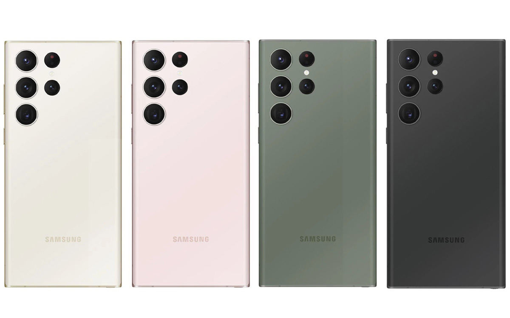
Galaxy S23 Ultra is currently Samsung's latest flagship in the mobile market. Samsung is very fond of playing with numbers, and the Galaxy S23 Ultra with its 200-megapixel camera emphasizes this Samsung tradition.The Galaxy S23 Ultra is equipped with a special version of the Snapdragon 8 Gen 2 processor, which has a higher clock speed and offers more processing power. Thanks to Snapdragon 8 Gen 2, the performance difference between Galaxy and iPhone is reduced and S23 Ultra appears much stronger in some areas such as graphics processing.It sets the standard for flagship phones in 2023. This expensive device is a defective product in every way.
tip:This phone is registered in Iran
🛒
Score AnTuTu:1,226,598
Google Pixel 8 Pro
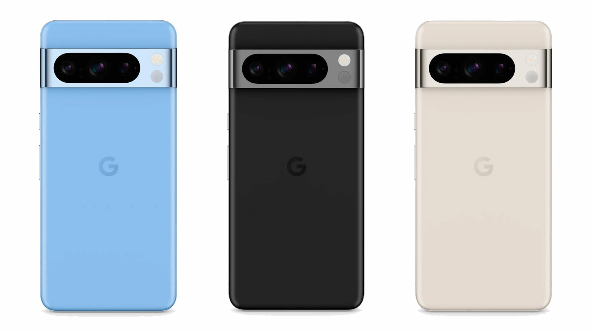
Google has years of experience in the mobile industry, but Pixels are still not perfect devices. The company originally made pixels that offered great performance at a reasonable price, but today it operates in the flagship market. When we talk about flagship devices, expectations are high.Google Pixels are equipped with a proprietary Tensor processor, which does not appear in the size and size of competitors.Pixel 8 Pro also uses a dedicated processor.
tip:This phone is registered in Iran
🛒
Score AnTuTu:963,013
Huawei P60 Pro
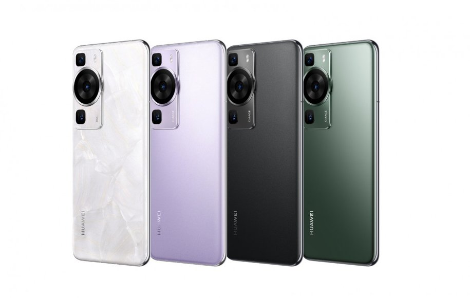
In recent years, Huawei was one of the best brands in the mobile market and even temporarily managed to climb to the top of the ranking by passing Apple and Samsung, but the severe US sanctions crippled the company's mobile unit. Before the sanctions, Huawei released several high-end phones with advanced processors every year.By holding a ceremony in China, it unveiled the P60 series phones, including Huawei P60, Huawei P60 Pro, and Huawei P60 Art. The P60 Art model has a very attractive design on the back panel. All three new Huawei phones are equipped with a 6.67-inch LTPO OLED display with a resolution of 2,700 x 1,220 pixels and a variable refresh rate of 120 Hz. These panels are protected by Kunlun glass and use a built-in fingerprint sensor.Huawei phones are deprived of Google mobile services, therefore they are not welcomed by users in international markets.Huawei phones are deprived of Google mobile services, therefore they are not welcomed by users in international markets.
tip:This phone is registered in Iran
🛒
Score AnTuTu:1.228.811
OnePlus 11
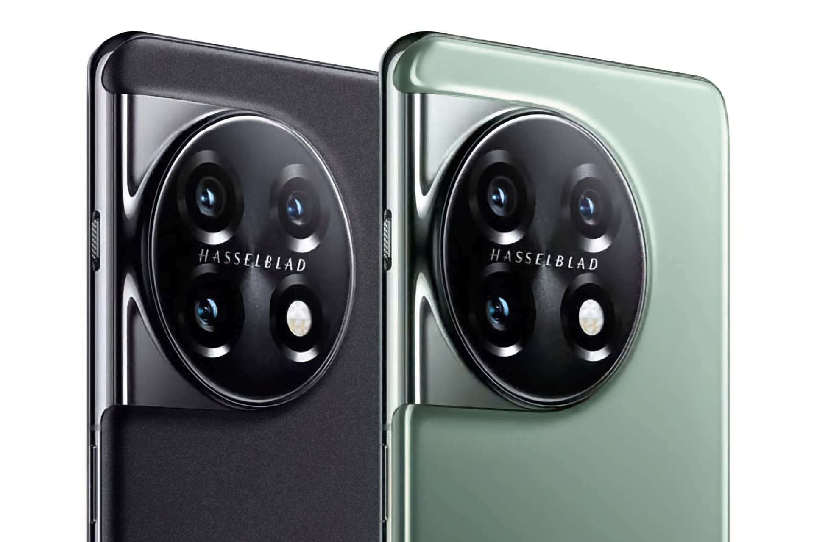
In recent years, OnePlus has paid special attention to the flagship phone market, but could not achieve significant success. OnePlus flagships are high-quality devices, but their purchase value is much lower than before. OnePlus used to make phones that had flagship specifications but were available at a lower price.OnePlus 11 with specifications such as Snapdragon 8 Gen 2 processor, 16 GB high-speed LPDDR5X RAM and 120 Hz LTPO 3.0 AMOLED display is not at least the best flagships in the market, but its price is lower than them. 5,000 mAh battery with 150 W charging and 50 megapixel main camera are among the other important features of OnePlus 11.
tip:This phone is registered in Iran
🛒
Score AnTuTu:1,027,699
Xiaomi 13 Ultra
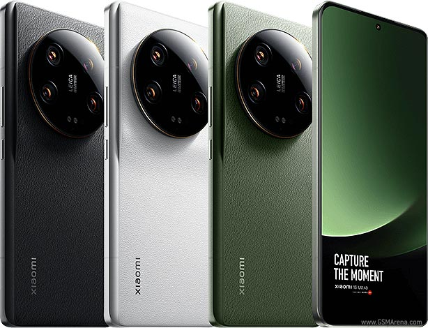
Xiaomi 13 Ultra hosts four separate cameras on the back panel, which were produced in collaboration with the well-known Leica brand. The main camera of the phone is equipped with a 50-megapixel 1-inch IMX989 sensor and a 23 mm lens with optical image stabilization.On the front, the Xiaomi 13 Ultra is equipped with a 6.73-inch AMOLED screen with a resolution of 3,200 x 1,440 pixels and an adaptive refresh rate of 120 Hz. Xiaomi says the brightness of this panel reaches 2,600 nits. Needless to say, no mobile phone had achieved this level of brightness before.The Xiaomi 13 Ultra is equipped with a Snapdragon 8 Gen 2 processor, along with 16 GB of LPDDR5X RAM and up to 1 TB of UFS 4.0 storage. The new Chinese flagship has a 5,000mAh battery with 90W wired charging and 50W wireless charging.
tip:This phone is registered in Iran
🛒
Score AnTuTu:1,301,000
Samsung Galaxy A54
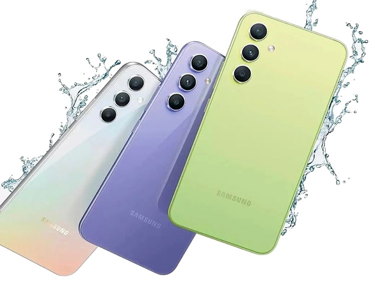
The Samsung Galaxy A54 is the best Korean company in year 6. The handset has a 5 Hz high quality camera and a good camera and meets the needs with a suitable processor. When we talk about mid -range phones, we need to adjust our expectations. One cannot expect the Galaxy A54 to be equipped with a powerful processor.Samsung has a Galaxy A54 with a 5.5 -inch display, Exynos 1380 processor, 8GB of RAM, up to 1GB of storage, triple camera with 2 -megapixel main sensor, IP67 -watt battery, IP67 The Android 4 operating system has released.
tip:This phone is registered in Iran
🛒
Score AnTuTu:509,330
Samsung Galaxy S23 FE
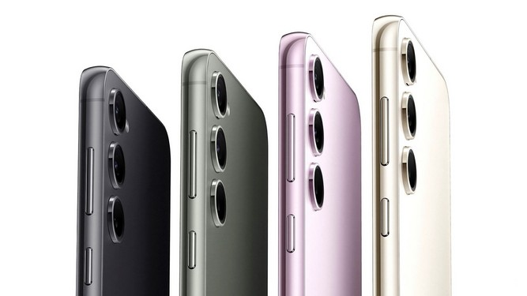
The screen section has not changed much. The 6.4 -inch Dynamic AMOLED 2X panel with resolution +FHD, 120 Hz Rate Refrees and HDR10 +Support for the S23 Fe's handset and as we expect a Samsung phone to provide you with a very good and attractive image quality. The resolution and dattyle of the image are very good and the colors, especially the black colors, have a lot of depth.The 4500 mAh Ether will charge for about a day in light and daily use, but you may need to recharge with heavy use at 6pm.The S23 FE is available in the US with Snapdragon 8 generation 1, but in the rest of the market with the Exynos 2200
tip:This phone is registered in Iran
🛒
Score AnTuTu:1,073,002
Xiaomi 13T
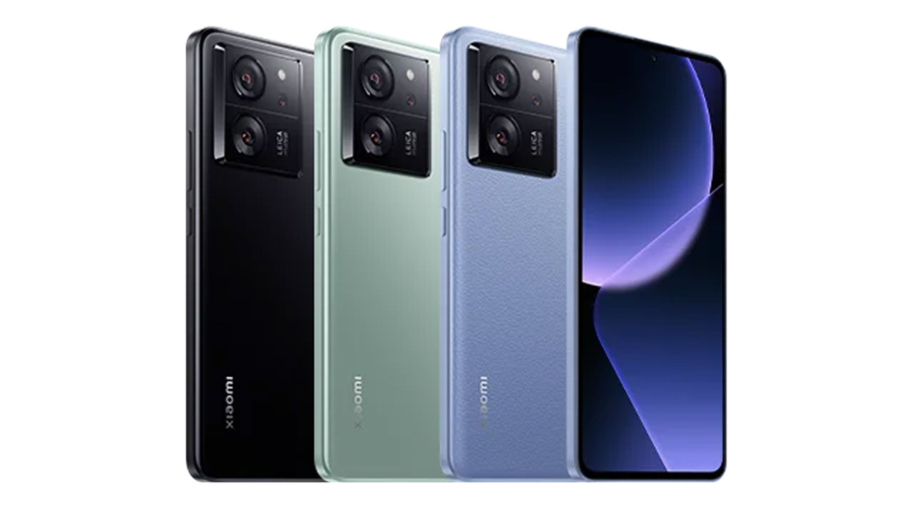
The large 6.67 -inch Crystalres panel that supports Dolby Vision and HDR10 +is on the phone. The image resolution has something between FHD +and QHD +and pixel density of about 446ppi. The details that give you a great time watching movies, playing or rotating on social media are great and enjoyable. It has a 12Bit panel and can display about 68 billion colors, allowing it to display real and lively colors.Rate's refreshment is 144 Hz and a 480 Hz Sampling Touch, which makes you work with the phone, web browsing, and especially playing a very fast -paced, fast and responding experience.Xiaomi uses a 4nm structure of the MediaTek Dimensity 8200 Ultra, which has a 4 -nanometer function and a Snapdragon 8 -generation function and is not very powerful and one of the parts that differ very much from the Pro version and cause price differences. Two phones.
tip:This phone is registered in Iran
🛒
Score AnTuTu:1,515,450
Poco F5
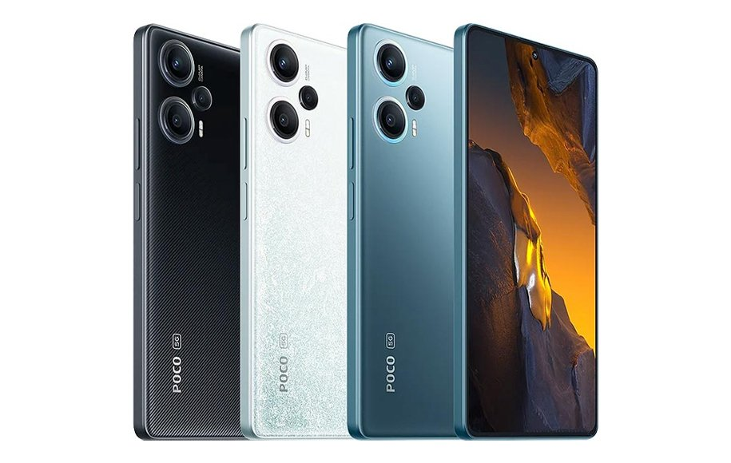
The 6.67 -inch display with the Old Panel and the 1080 resolution gives a lot of good details and with the 12Bit feature, it can display over 68 billion colors and shows high color contrast images and excellent accuracy. The phone can be supported by HDR10 +and Dolby Vision, which makes you enjoy high quality and attractive color combination while watching quality videos on YouTube or other apps. 120 Hz update and 240 Hz Sampling Touch gives you a quick and ravening experience when working with the phone or playing.The Poko F5 uses a new and up -to -date Snapdragon +7 chip, which is structurally similar to the Snapdragon 8 generation 1 and simply summarizes the speed of the core and the weaker graphics processor than the old Snapdragon flagship chip That's why the hardware performance of this handset is very good, and almost no handset can reach the feet of this phone and easily pass through competitors.
tip:This phone is registered in Iran
🛒
Score AnTuTu:943,804
Google Pixel 7A
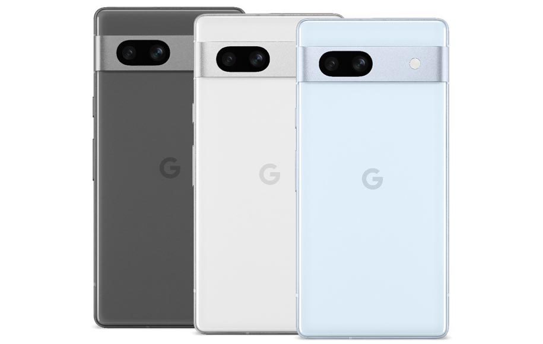
Google's pixels are known to focus on the camera, and especially the software capabilities. The imaging experience provided a high level. Some experts consider the imaging performance to be better than the flagship iPhones and flagships. Unlike the previous generation, it is said to be available with a 4 Hz screen to make animations more smoother. This phone will probably have a dual camera again. Google is unlikely to equip the Pixel 7A with three cameras. The pixels have a dedicated chip and most likely the Pixel 7A will use the Tensor G2 chip.
tip:This phone is registered in Iran
🛒
Score AnTuTu:687,738
Samsung Galaxy A34
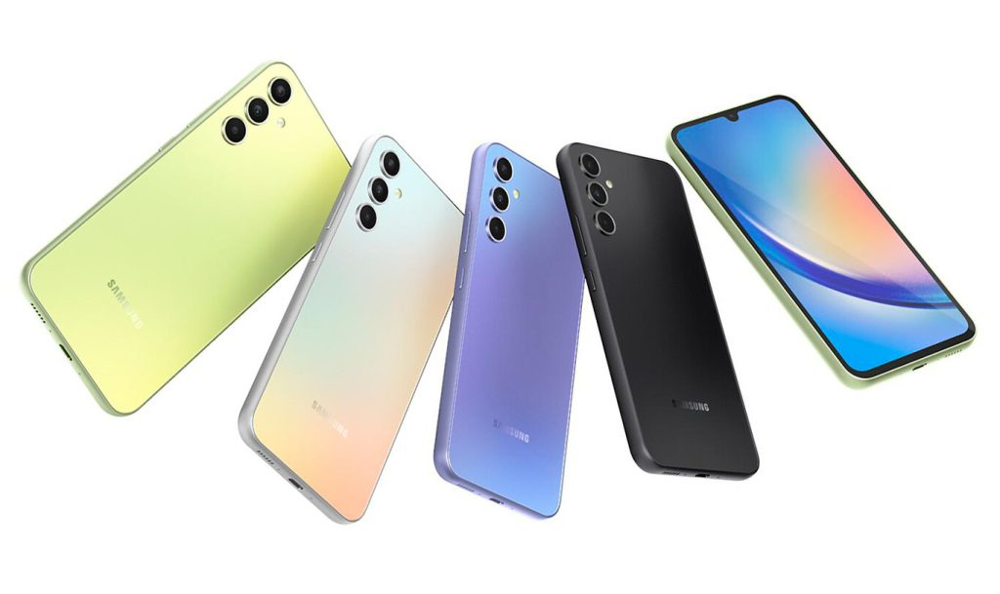
The Galaxy A34 is another fascinating Samsung midterm that has a lower place than the Galaxy A54, but it looks great for everyday work. The Galaxy A34 has a very similar design to the Galaxy A54 in the back panel, but the front panel hosts a drip cavity for the camera.The Galaxy A34 has a 5.5 -inch display, a Dimensity 1080 processor, 8GB of RAM, up to 1GB of storage, a triple -megapixel 3 -megapixel sensor, a 1.2 mAh battery with a 2 -watt power supply, IP67 .
tip:This phone is registered in Iran
🛒
Score AnTuTu:687,738
Samsung Galaxy A24
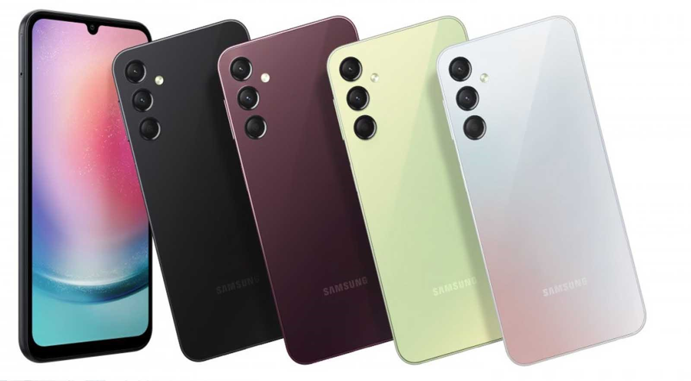
Samsung budget phones are produced with a plastic body and a not so strong camera, but their price makes it possible to overlook some weaknesses.Samsung Galaxy A24 has a 50-megapixel main camera and a 13-megapixel selfie camera. 5,000 mAh battery with 24W charging is another feature of Galaxy A24. The Samsung Galaxy A24 uses the Helio G99 processor along with 6GB of RAM and 64GB of storage.
tip:This phone is registered in Iran
🛒
Score AnTuTu:411.900
Poco C40
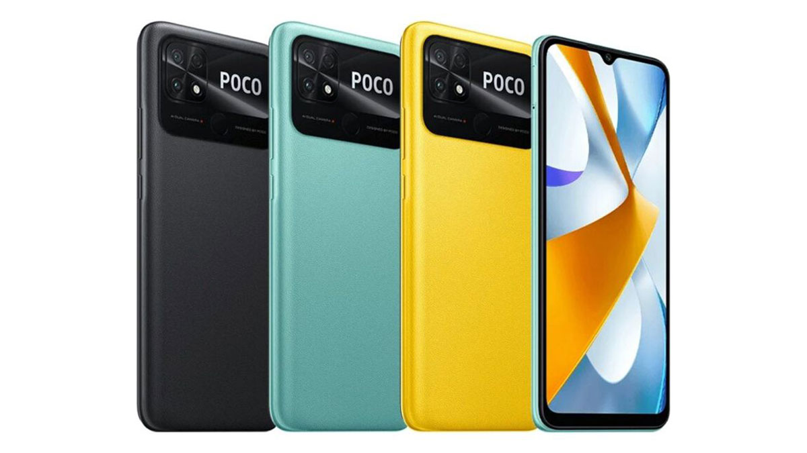
The body is made of integrated plastic, which has a structure similar to artificial leather, and due to the type of texture used, the method does not slip when using your hand. The 6.71-inch IPS screen with 720 resolution does not have many details, and due to the brightness and viewing angle At least, it is not possible to use Poco C40 in the outdoor environment with a lot of light. The screen margin is relatively large, which is normal for this price range. The little-known JLQ JL510 processor is used for the Poco C40 phone, which does not perform very well.
tip:This phone is registered in Iran
🛒
Score AnTuTu:128,944
Samsung Galaxy A14
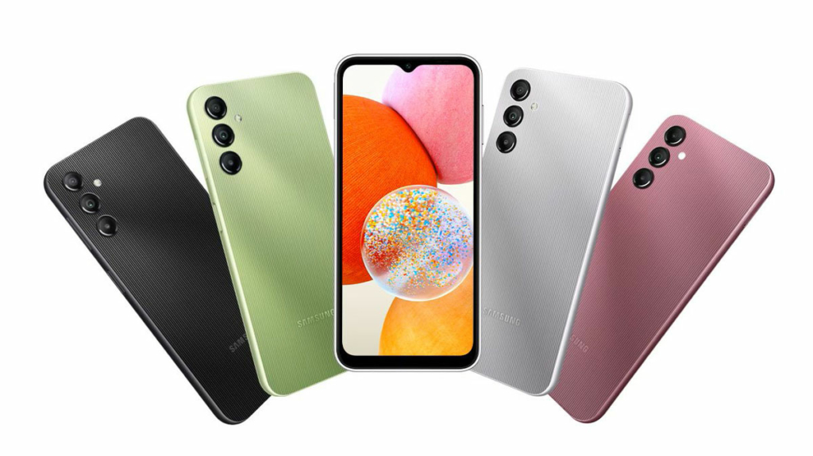
This budget device, unveiled at CES 2023, uses the Dimensity 700 chip and has a 6.6-inch 90Hz display with Full HD+ resolution. Samsung Galaxy A14 is equipped with a 50-megapixel main camera and uses a 5,000 mAh battery. The price tag of $199 makes the Galaxy A14 an attractive device in the Iranian market.
tip:This phone is registered in Iran
🛒
Score AnTuTu:409,771
Poco M5
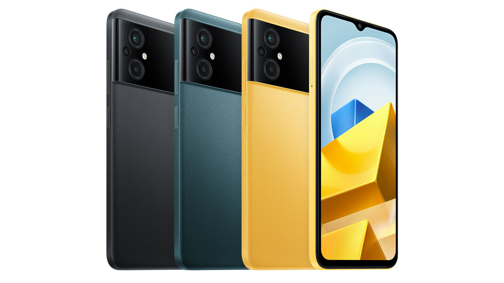
The poco m5 body is completely made of plastic and the back part is similar to synthetic leather, which gives you a better feeling when using it. The fingerprint sensor is combined with the power button and has good accuracy and speed. The 6.58-inch IPS LCD screen with The 1080 resolution and 90 Hz update rate of the Poco M5 has good quality and details, but the accuracy and clarity of the colors are not very good and because of the low brightness of the screen, it bothers you a little in bright light. The edge of the screen is relatively high and has an older design, and a drop notch is used for the selfie camera.
tip:This phone is registered in Iran
🛒
Score AnTuTu:359,833
Honor X7a

Compared to other budget phones, it uses a plastic body with good build quality and a simple and attractive design, which is not too large in relation to its weight and diameter, and because of the curvature of the back frame, the phone is relatively easy to handle. Large screen 6. 75-inch has a relatively large margin and uses an old design with a drop notch, and its TFT LCD panel with a resolution of 720 does not display many fine details for you, and due to the low brightness and limited viewing angle, it does not stand out in the environment. It was easy to use, of course, having a smart 90 Hz refresh rate helps a little in this department.
tip:This phone is registered in Iran
🛒
Score AnTuTu:134,737
Moto E32s
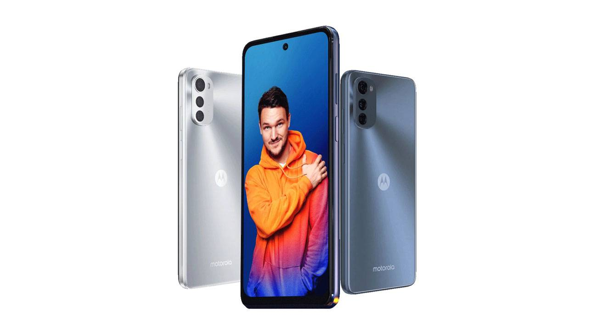
Considering the price, the body has good build quality and although it is made entirely of plastic, it conveys the feeling of cheapness and uses a flat and attractive design. The 6.5-inch screen with IPS panel and 720 resolution and limited screen brightness are among the standards. This range is considered, but Motorola has made a winning card in this section and has used a 90 Hz refresh rate for this phone, which makes it significantly superior to other phones in this section, and even in automatic mode, according to the type Use changes this value.
tip:This phone is registered in Iran
🛒
Score AnTuTu:115,667